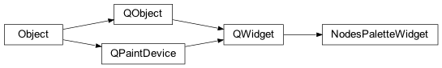
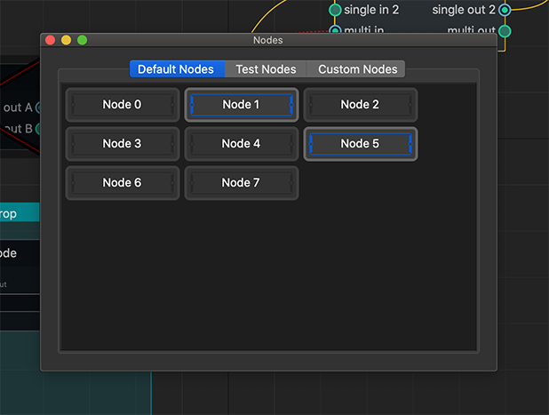

Built-in Widgets¶
NodeGraphQt framework comes included with a few custom widgets.Classes:
|
The |
|
The |
|
The |
Properties Bin¶
- class NodeGraphQt.PropertiesBinWidget(parent=None, node_graph=None)¶
The
NodeGraphQt.PropertiesBinWidgetis a list widget for displaying and editing a nodes properties.
1from NodeGraphQt import NodeGraph, PropertiesBinWidget 2 3# create node graph. 4graph = NodeGraph() 5 6# create properties bin widget. 7properties_bin = PropertiesBinWidget(parent=None, node_graph=graph) 8properties_bin.show()
See also
NodeGraphQt.BaseNode.add_custom_widget(),NodeGraphQt.NodeObject.create_property(),NodeGraphQt.constants.NodePropWidgetEnum- Parameters
parent (QtWidgets.QWidget) – parent of the new widget.
node_graph (NodeGraphQt.NodeGraph) – node graph.
Attributes:
property_changed(*args, **kwargs)Signal emitted (node_id, prop_name, prop_value)
Methods:
limit()Returns the limit for how many nodes can be loaded into the bin.
set_limit(limit)Set limit of nodes to display.
add_node(node)Add node to the properties bin.
remove_node(node)Remove node from the properties bin.
lock_bin()Lock/UnLock the properties bin.
Clear the properties bin.
prop_widget(node)Returns the node property widget.
- property_changed(*args, **kwargs)¶
Signal emitted (node_id, prop_name, prop_value)
- limit()¶
Returns the limit for how many nodes can be loaded into the bin.
- Returns
node limit.
- Return type
int
- set_limit(limit)¶
Set limit of nodes to display.
- Parameters
limit (int) – node limit.
- add_node(node)¶
Add node to the properties bin.
- Parameters
node (NodeGraphQt.NodeObject) – node object.
- remove_node(node)¶
Remove node from the properties bin.
- Parameters
node (str or NodeGraphQt.BaseNode) – node id or node object.
- lock_bin()¶
Lock/UnLock the properties bin.
- clear_bin()¶
Clear the properties bin.
- prop_widget(node)¶
Returns the node property widget.
- Parameters
node (str or NodeGraphQt.NodeObject) – node id or node object.
- Returns
node property widget.
- Return type
NodePropWidget
Nodes Palette¶
- class NodeGraphQt.NodesPaletteWidget(parent=None, node_graph=None)¶
The
NodeGraphQt.NodesPaletteWidgetis a widget for displaying all registered nodes from the node graph in a grid layout with this widget a user can create nodes by dragging and dropping.Implemented on NodeGraphQt:v0.1.71from NodeGraphQt import NodeGraph, NodesPaletteWidget 2 3# create node graph. 4graph = NodeGraph() 5 6# create nodes palette widget. 7nodes_palette = NodesPaletteWidget(parent=None, node_graph=graph) 8nodes_palette.show()
- Parameters
parent (QtWidgets.QWidget) – parent of the new widget.
node_graph (NodeGraphQt.NodeGraph) – node graph.
Methods:
set_category_label(category, label)Override tab label for a node category tab.
Get the tab widget.
update()Update and refresh the node palette widget.
- set_category_label(category, label)¶
Override tab label for a node category tab.
- Parameters
category (str) – node identifier category eg.
"nodes.widgets"label (str) – custom display label. eg.
"Node Widgets"
- tab_widget()¶
Get the tab widget.
- Returns
tab widget.
- Return type
QtWidgets.QTabWidget
- update()¶
Update and refresh the node palette widget.
Nodes Tree¶
- class NodeGraphQt.NodesTreeWidget(parent=None, node_graph=None)¶
The
NodeGraphQt.NodesTreeWidgetis a widget for displaying all registered nodes from the node graph with this widget a user can create nodes by dragging and dropping.
1from NodeGraphQt import NodeGraph, NodesTreeWidget 2 3# create node graph. 4graph = NodeGraph() 5 6# create node tree widget. 7nodes_tree = NodesTreeWidget(parent=None, node_graph=graph) 8nodes_tree.show()
- Parameters
parent (QtWidgets.QWidget) – parent of the new widget.
node_graph (NodeGraphQt.NodeGraph) – node graph.
Methods:
set_category_label(category, label)Override the label for a node category root item.
update()Update and refresh the node tree widget.
- set_category_label(category, label)¶
Override the label for a node category root item.

- Parameters
category (str) – node identifier category eg.
"nodes.widgets"label (str) – custom display label. eg.
"Node Widgets"
- update()¶
Update and refresh the node tree widget.